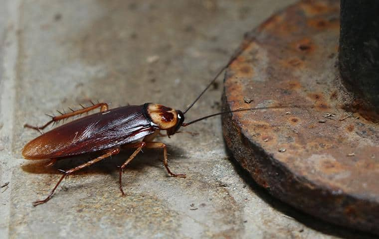

Roach

One of the oldest surviving species in history
is the Cockroach. The roach is an unwelcomed pest
in many households, but they can also be found
crawling along the subway tracks of New York City.
Due to their ability to thrive in harsh conditions,
roaches are nearly impossible to fully exterminate
after investation.